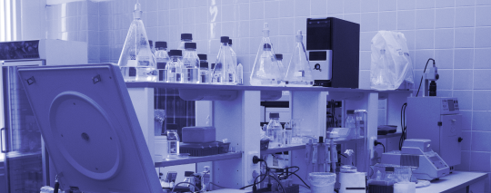
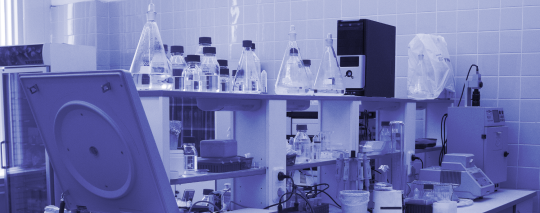

Компания «ОКА-Биотех» была основана в 2014 г. физическими лицами, в прошлом сотрудниками ведущего института в области генетики микроорганизмов — «ГосНИИгенетики». Целью компании является создание и коммерциализация научных разработок в области микробного синтеза.
Включаясь в разработку на самых ранних ее стадиях, иногда только на стадии лабораторного подтверждения идеи проекта, ОКА-Биотех вкладывает в проект не только финансовые средства, но и квалифицированный профильный менеджмент, технологическое оборудование и опыт работы, необходимые для доведения разработки до промышленного внедрения.
В настоящее время компания «ОКА-Биотех» представляет собой хорошо оснащенную научно-производственную компанию с высокопрофессиональными сотрудниками. В арсенале компании все современные методы микробной биотехнологии: создание штаммов продуцентов методами генной инженерии, разработка технологий ферментации, выделения и очистки целевых продуктов микробного синтеза.
Вместе с тем, в современной науке нельзя быть первыми во всем, поэтому ОКА-Биотех сотрудничает с лучшими научно-исследовательскими организациями страны: НИЦ «Курчатовский институт» — ГосНИИгенетика, Институт биоорганической химии им. академиков М.М. Шемякина и Ю.А. Овчинникова РАН и другими.
К актуальным проектам компании относятся технология получения акадезина и гиалуроновой кислоты.
 
